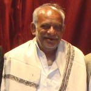

Olasuni
- Home
-
About
-
Messages
-
Santh's Life
- Description of Monument
- Caves
-
Gallery
- Social Media
- Contact
Message from Raja Shree Rabindra Kishor Shreechandan (Badakotha, Kendrapara)
Olasuni a mountain, a cave near Bay of Bengal. Primitively it was a place where a goddess named as CHANDI was worshipped in deep forest. Two hundred years back the place Olasuni was under the kingdom of King Narendra of Kendrapada. Due to dense forest the people did not venture to go. Only a few used to go to CHANDI in festive occasion. So to say a place of dreaded animals sanctuary.
Santha Arakhita the real prince Balabhadra left all attachments of home and monarch hood. He moved place to place in search of a place to sit for meditation. In this process he was trying to cut a leave from a tree and women saw him and abused him saying “Arakhita”.
This word Arakhita impressed the prince and from that day he used to tell his name as Arakhita. That Arakhita took shelter at Olasuni cave. After detaching from worldly affairs he surrendered himself to Lord Jagannath.
The surrender was total surrender. His desire for meditation forbid him to sit only at Puri. He moved to kingdom to kingdom and met many kings. Nobody could able to fulfill his desire of a selective place. After meeting king of Kujanga he was disgusted. On the way back he wanted to meet King Radhashyam Narendra at his palace at Kendrapada. He came to know that the king was at temple. He went to the temple but the gate keeper did not allow him to go inside the temple as the king was worshipping. He waited for a long period but could not able to meet the king. Being aggrieved he told the gate keeper that your king was not worshipping rather he was asking the god which one I would purchase white horse or black horse.
Then he left the place the gate keeper was astonished and narrated the story to king. King after hearing ordered the gate keeper to stop the Sadhu with request that king was on the way to meet you. Narendra reached with folded hands and requested him to come to uasha. Very politely and cordially prince Balabhadra made Narendra to understood his desire. Gladly Narendra accepted the proposal of taking Olasuni mountain for meditation.
From that day onwards the prince Balabhadra so to say Arakhita remained there. He started worshipping the goddess CHANDI. The grace of CHANDI accorded him super spiritual power to resist all evils. It was and it is not to be believed but was truth dreaded animals like tigers, lions, bears, snakes were co-resided with him. The villagers living on the foot of the mountain were astonished and thought him as an incarnation of God. Really people never ventured to go to the mountain even not to the goddess CHANDI how he lived alone for years together. This is symbol of love among living man and animals. His super spiritual power could resist all devils manifestation of all kinds.
His sole doctrine, all living beings are equal. We should love them. Reciprocation is obvious, no distinguation, no cast, no creed, no fear, no hateration should be the main motto of life. Only love and serve can make you achieve salvation.